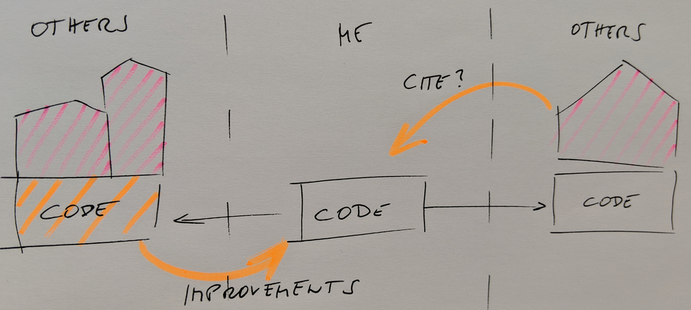

Social Coding
Objectives
Get an overview of motivations and benefits for sharing and reusing code.
Sharing papers and academic credit
We want maximum visibility and maximum reuse.
The more interesting science is done referencing my paper, the better for me.
Discussion
Come up with reasons for sharing your scripts/code/data
Also think about reasons for not sharing
Why is software often treated differently from papers
What are the benefits of sharing software?
Easier to find and reproduce (scientific reproducibility)
More trustworthy: others can verify correctness and find and report bugs
Enables others to build on top of your code (derivative work, provided the license allows it)
Others can submit features/improvements
Others can fix bugs
Many tools and apps are free for open source
(GitHub, Travis CI,
Appveyor, Read the Docs)
Good for your CV: you can show what you have built
Discourages competitors. If others can’t build on your work, they will make competing work
Sharing is scary
A license can avoid it. Anyway, it is very unlikely that others will understand your code and publish before you without involving you in a collaboration. Sharing is a form of publishing.
In practice almost nobody will judge the quality of your code.
Isn’t this good? Would you not like to use a code which gives people the chance to locate bugs?
This can become a problem: use tools and community and protect your time.
Open source does not mean everybody can change your version.
It will be clear which is the official version.
Sharing code

“I did all the ground work and they get to do the interesting science?”
Journal policy as motivation for sharing
From Science editorial policy:
“We require that all computer code used for modeling and/or data analysis
that is not commercially available be deposited in a publicly accessible
repository upon publication. In rare exceptional cases where security
concerns or competing commercial interests pose a conflict, code-sharing
arrangements that still facilitate reproduction of the work should be
discussed with your Editor no later than the revision stage.”
From Nature editorial policy:
“An inherent principle of publication is that others should be able to
replicate and build upon the authors’ published claims. A condition of
publication in a Nature Research journal is that authors are required to make
materials, data, code, and associated protocols promptly available to readers
without undue qualifications. Any restrictions on the availability of
materials or information must be disclosed to the editors at the time of
submission. Any restrictions must also be disclosed in the submitted
manuscript.”
However a study showed that despite these policies, many people still do not share their code üòû : https://www.pnas.org/content/115/11/2584. This paper includes samples of charming author responses such as
“When you approach a PI for the source codes and raw data, you better explain
who you are, whom you work for, why you need the data and what you are going
to do with it.”
Social coding
Whether you can share your output depends on how you obtained your input.
.emph[Software licenses] matter.
Sometimes “OTHERS” are you yourself in the future in a different group/job.
Motivation for open source software
Enable derivative work
Do not lock yourself out of own code
Attract developers who want to be able to show the coding work on their CVs
Tightly regulated domains require open source
OSS can lead to more engagement from industry which may lead to more impact
If it’s not open, it is not likely to become standard
Code reuse
Should you reuse things that others have done?
Types of things that can be reused:
Do you want others to reuse what you make?
How do you turn your own small project into the next numpy? Do you want to?
What contributes to reuse?
What contributes to you being able to reuse stuff that others make, and others (or you) being able to reuse your stuff?
Discussion
As a developer or .emph[user] what are you looking at when discovering a new package?
These are common things to check:
Date of last code change … is the project abandoned?
Release history … how about stability and backwards-compatibility?
Versioning … will it be painful to upgrade?
Number of open pull requests and issues - are they followed-up?
Installation instructions … will it be difficult to get it running?
Example … will it be difficult to get started?
License … am I allowed to use it?
Contribution guide … how to contribute and decision process?
Trust and community … somebody you trust recommended it?
FAIR principles
(c) Scriberia for The Turing Way, CC-BY.
For a discussion of FAIR in the context of software, see https://softdev4research.github.io/4OSS-lesson/.
Social Coding¶
Questions
What are the benefits of sharing code?
What are FAIR principles?
Objectives
Get an overview of motivations and benefits for sharing and reusing code.
Sharing papers and academic credit¶
We want maximum visibility and maximum reuse.
The more interesting science is done referencing my paper, the better for me.
Discussion
Come up with reasons for sharing your scripts/code/data
Also think about reasons for not sharing
Why is software often treated differently from papers
What are the benefits of sharing software?¶
Easier to find and reproduce (scientific reproducibility)
More trustworthy: others can verify correctness and find and report bugs
Enables others to build on top of your code (derivative work, provided the license allows it)
Others can submit features/improvements
Others can fix bugs
Many tools and apps are free for open source (GitHub, Travis CI, Appveyor, Read the Docs)
Good for your CV: you can show what you have built
Discourages competitors. If others can’t build on your work, they will make competing work
Sharing is scary¶
Fear of being scooped
Exposes possibly “ugly code”
Others may find bugs
Others may require support and ask too many questions
Fear of losing control over the direction of the project
“Bad” derivative projects may appear
Sharing code¶
Sharing code and encouraging .emph[derivative work] may boost your academic impact.
Journal policy as motivation for sharing¶
From Science editorial policy:
From Nature editorial policy:
However a study showed that despite these policies, many people still do not share their code üòû : https://www.pnas.org/content/115/11/2584. This paper includes samples of charming author responses such as
Social coding¶
Whether you can share your output depends on how you obtained your input.
.emph[Software licenses] matter.
Sometimes “OTHERS” are you yourself in the future in a different group/job.
Motivation for open source software¶
Enable derivative work
Do not lock yourself out of own code
Attract developers who want to be able to show the coding work on their CVs
Tightly regulated domains require open source
OSS can lead to more engagement from industry which may lead to more impact
If it’s not open, it is not likely to become standard
Code reuse¶
Should you reuse things that others have done?
Types of things that can be reused:
Main libraries (e.g. numpy, scipy)
Special scientific libs
Random code from website
Copying from Stack Overflow
Do you want others to reuse what you make?
How do you turn your own small project into the next numpy? Do you want to?
What contributes to reuse?¶
What contributes to you being able to reuse stuff that others make, and others (or you) being able to reuse your stuff?
Discussion
As a developer or .emph[user] what are you looking at when discovering a new package?
These are common things to check:
Date of last code change … is the project abandoned?
Release history … how about stability and backwards-compatibility?
Versioning … will it be painful to upgrade?
Number of open pull requests and issues - are they followed-up?
Installation instructions … will it be difficult to get it running?
Example … will it be difficult to get started?
License … am I allowed to use it?
Contribution guide … how to contribute and decision process?
Trust and community … somebody you trust recommended it?
This is what we teach in CodeRefinery:¶
Version control including project management
Testing
Documentation
Reproducibility
Code citations
Being findable
Licensing
FAIR principles¶
(c) Scriberia for The Turing Way, CC-BY.
For a discussion of FAIR in the context of software, see https://softdev4research.github.io/4OSS-lesson/.
Keypoints
Share your software, if you can
Reuse other peoples software